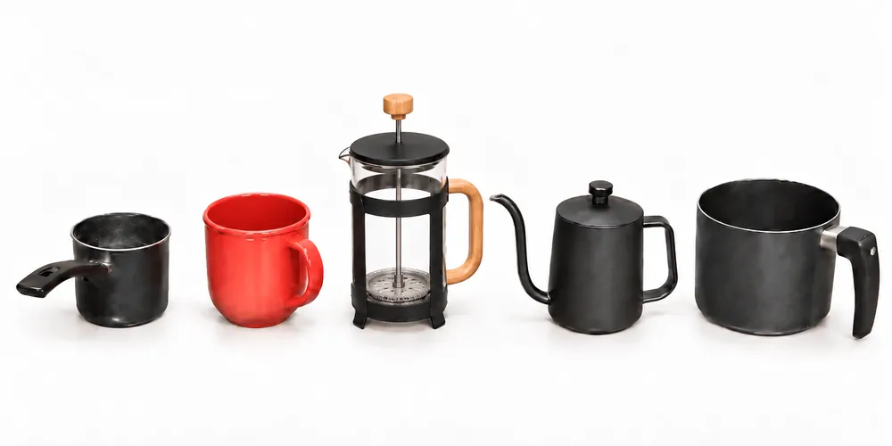
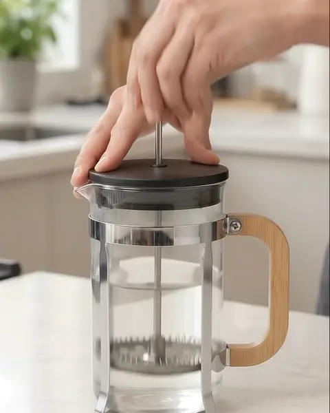
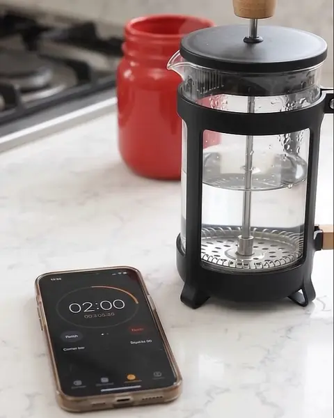
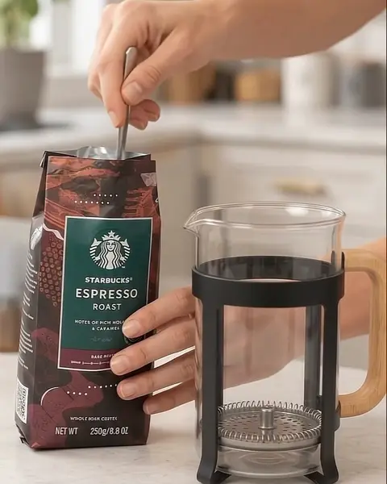
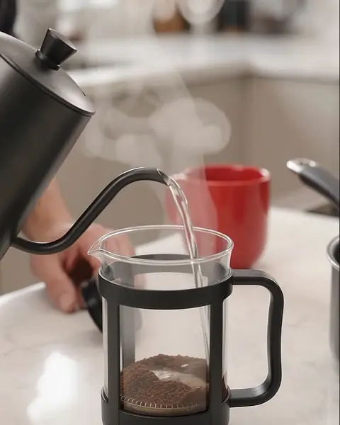
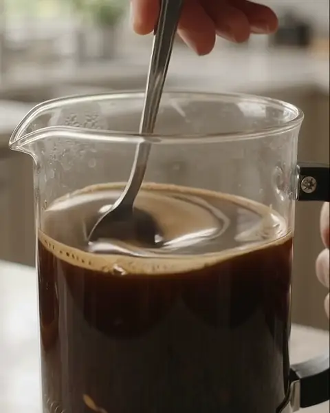
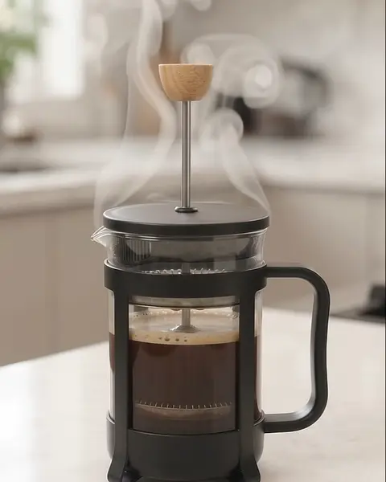
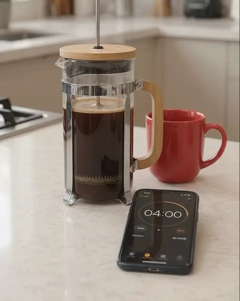
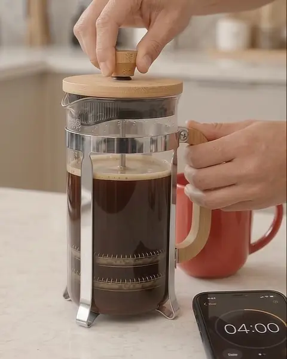
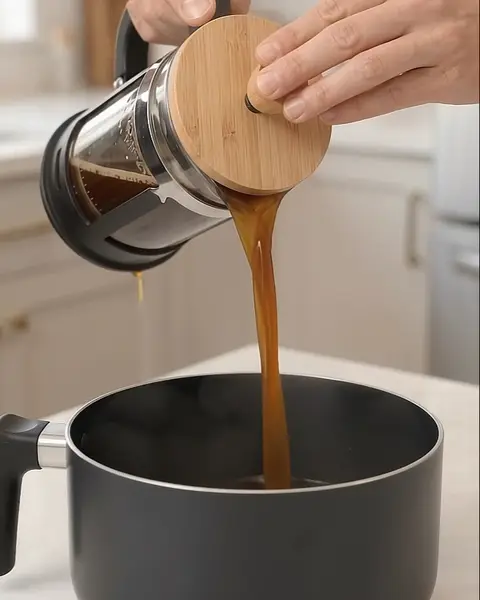

Agua 1
Máximo
Cacerola pequeña
Agua del caño · no se bebe
Solo sirve para calentar la prensa francesa y enjuagar sus piezas con agua muy caliente.
Prensa → enjuague → se retira
Prensa francesa · Mi método
Dos aguas, cinco utensilios y diez pasos. Así preparo mi café en casa, exactamente como lo hago.

Mi método
Todo se organiza alrededor de esta idea: una agua prepara la prensa; la otra prepara el café.
Agua del caño · no se bebe
Solo sirve para calentar la prensa francesa y enjuagar sus piezas con agua muy caliente.
Prensa → enjuague → se retira
Agua limpia que compro para beber
Es la única agua con la que preparo el café. Queda al mínimo mientras trabajo con la prensa.
Tetera → café → la cacerola vacía puede recibir el café
Antes de empezar
Siempre en este orden, de izquierda a derecha: así tengo preparada mi zona de trabajo para hacer el café eficientemente y tener todo a mano. Pasa el cursor sobre cada uno.Toca cada uno para ver su función.
Contiene la primera agua, del caño. No se bebe: la uso para calentar la prensa francesa y enjuagar sus piezas con agua muy caliente.
Recibe la tapa y el conjunto del émbolo/filtros cuando los retiro de la prensa: están calientes y no quiero ponerlos directamente sobre la mesa.
Es el recipiente principal: aquí preparo el café.
Recibe el agua limpia que ya herví. Con ella vierto esa agua sobre el café haciendo movimientos circulares.
Contiene la segunda agua: la limpia que compro para beber, con la que preparo el café. Cuando queda vacía, también puedo usarla para recibir el café terminado.
De un vistazo · o en detalle
Repasa los recordatorios sin reproducir nada. Abre cualquier paso para ver su video y la explicación completa.

Paso 01
Enciendo al mismo tiempo dos cacerolas.
Cacerola pequeña · agua del caño. Esta agua no es para beber: solo la uso para calentar y enjuagar la prensa francesa y sus piezas. Pongo su hornilla al máximo para que hierva rápidamente.
Cacerola grande · agua para beber. Es el agua limpia que compro para beber y que después usaré para preparar el café. Esta segunda hornilla la dejo al mínimo.
Por qué la grande va al mínimo
Porque todavía tengo que esperar que hierva la primera agua, trabajar con la prensa francesa y dejarla calentándose durante aproximadamente 2 minutos.

Paso 02
Cuando hierve el agua de la cacerola pequeña, la vierto dentro de la prensa francesa y coloco la tapa con el émbolo.
Aprovecho esa misma agua muy caliente para enjuagar el conjunto que llamo “filtros”: el filtro, las placas, la pieza en forma de cruz y el resorte.
Durante aproximadamente 10 segundos subo y bajo el émbolo para que el agua caliente pase por esas piezas. Al terminar, subo completamente el émbolo: los filtros quedan arriba.
Por qué
Con los filtros arriba, el calor y el vapor también ayudan a calentar toda la jarra de la prensa francesa.

Paso 03
En mi celular pongo un cronómetro de 2 minutos. Durante ese tiempo dejo el agua caliente dentro de la prensa francesa para que la jarra tome temperatura.
Cuando termina el tiempo, retiro la tapa junto con el émbolo y los filtros. Como están calientes y no quiero apoyarlos directamente sobre la mesa, coloco ese conjunto dentro del jarro rojo que tengo preparado al lado.
Después retiro el agua que usé para calentar la prensa.
Por qué
La jarra toma temperatura antes de recibir el café, y las piezas calientes nunca quedan apoyadas directamente sobre la mesa.
En mi preparación real uso el cronómetro de mi celular. El de esta web es un apoyo adicional para quien siga la guía.

Paso 04
Echo aproximadamente de 2 a 3 cucharas grandes de café dentro de la prensa francesa.
Después sujeto la jarra y la agito suavemente para distribuir el café de forma horizontal.
Por qué
No quiero que el café quede amontonado formando una especie de “cerro” en el centro: busco que quede aproximadamente nivelado.

Paso 05
Para este momento ya debería haber hervido el agua limpia de la cacerola grande. Retiro esa cacerola y la coloco al extremo derecho de mi zona de trabajo.
Vierto la cantidad necesaria de esa agua limpia dentro de la tetera.
Después tomo la tetera y empiezo a echar el agua sobre el café que está dentro de la prensa francesa, con movimientos circulares, hasta terminar toda el agua que preparé en la tetera.
Importante
Aquí solo uso el agua 2: la limpia que compro para beber.

Paso 06
Cuando termino de echar el agua con la tetera, tomo una cuchara y mezclo el café con un movimiento parecido al que haría una persona al endulzar una bebida.
Importante
No agrego ningún ingrediente: ni azúcar ni leche. Solamente estoy mezclando café + agua con la cuchara.

Paso 07
Inmediatamente después vuelvo a colocar la tapa de la prensa francesa.
Bajo el émbolo solamente hasta que el filtro llegue aproximadamente a la superficie donde se encuentra el café.
Importante
Todavía no presiono el café hacia el fondo.

Paso 08
Uso nuevamente mi celular y configuro un cronómetro de entre 4 y 5 minutos. Normalmente pongo 4 minutos.
Durante ese tiempo dejo infusionar el café. No sigo bajando el émbolo.
Por qué 4 minutos
En ocasiones estoy lejos de la cocina y, mientras regreso, el tiempo real termina quedando aproximadamente dentro del rango de 4 a 5 minutos.
En mi preparación real uso el cronómetro de mi celular. El de esta web es un apoyo adicional para quien siga la guía.

Paso 09
Cuando pasan aproximadamente los 4 minutos, bajo lentamente el émbolo.
Algunas personas lo bajan hasta que llega por completo al fondo. Yo no hago exactamente eso: prefiero detenerlo aproximadamente a la distancia del grosor de un dedo antes de tocar el fondo.
Por qué
Es una precaución adicional para reducir todavía más la posibilidad de que algún grano o partícula llegue al café ya filtrado, aunque probablemente no sucedería. Este consejo lo aprendí en Internet y lo incorporé a mi forma de preparar café.

Paso 10
Cuando termino de prensar, vacío inmediatamente el café. Mientras lo hago, sostengo el émbolo.
Puedo vaciarlo en la cacerola grande —que para ese momento ya está vacía— o en cualquier recipiente adecuado que soporte café casi hirviendo.
Por qué no lo dejo en la prensa
En el fondo permanecen los granos de café, y no quiero que sigan en contacto con el café líquido durante más tiempo del necesario. Así busco conservar mejor su olor y su sabor.
Al final: disfrutar. ☕
Fuera de mi método
Otras maneras conocidas de preparar café con prensa francesa. No forman parte de mi procedimiento; cada tarjeta indica de dónde proviene.
En lugar de cucharas, se usa balanza. Ejemplos publicados: 30 g de café por 350 g de agua (≈ 1:12), cerca de 1:15, o 30 g por 500 g (≈ 1:17).
Alternativa · Blue Bottle, Intelligentsia, James Hoffmann
Hay guías que miden el agua: Blue Bottle indica 205–210 °F (≈ 96–99 °C). Como referencia general, la SCA pide que el café alcance entre 90 y 96 °C en las cafeteras que certifica.
Alternativa · Blue Bottle, SCA
Primero se vierte solo el agua necesaria para empapar todo el café, se espera 1 minuto y luego se completa el vertido.
Alternativa · Intelligentsia
Tras romper la capa superior, se remueve cada 10–30 s y se deja de remover 1 minuto antes del final; tiempo total de 4 a 6 minutos.
Alternativa · Intelligentsia
Hacia los 4 minutos se remueve la costra de la superficie con una cuchara y se retiran la espuma y las partículas que flotan con dos cucharas.
Alternativa · James Hoffmann
Después de retirar la espuma se espera al menos 5 minutos (hasta 8) para que las partículas se asienten, y el émbolo solo se baja hasta la superficie.
Alternativa · James Hoffmann
El émbolo se baja con presión constante durante unos 20 segundos y el café sobrante se pasa a otro recipiente para que no siga extrayéndose.
Alternativa · Blue Bottle
Pasar el café ya prensado por un filtro de papel elimina casi todo el sedimento, aunque también parte de los aceites que dan cuerpo a la prensa francesa.
Alternativa · Complete Home Barista